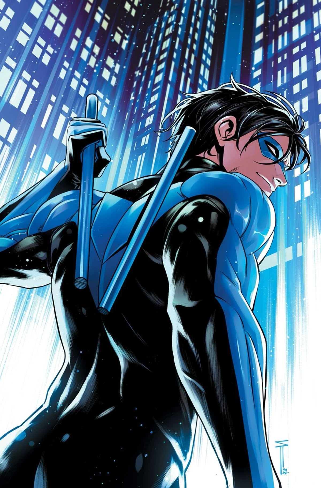
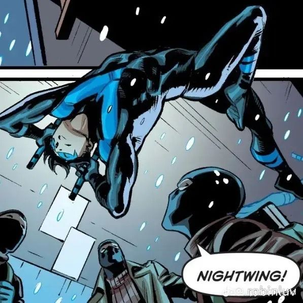
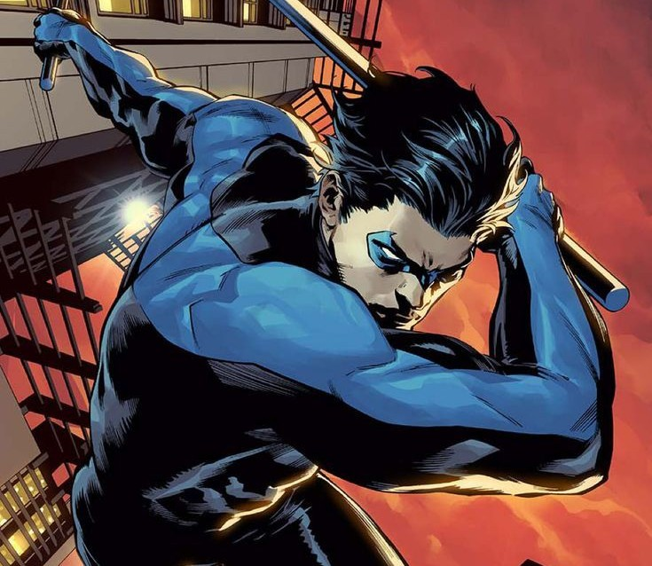
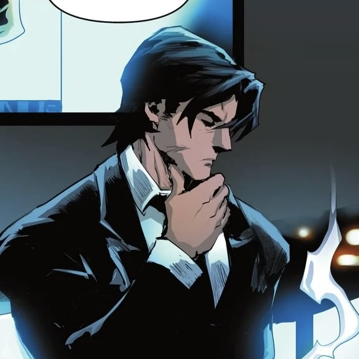
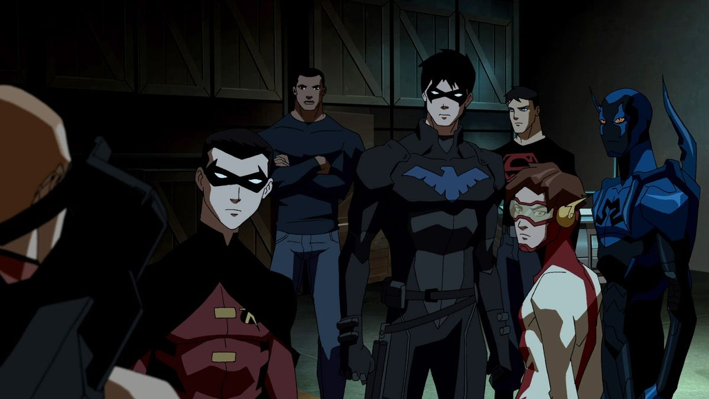
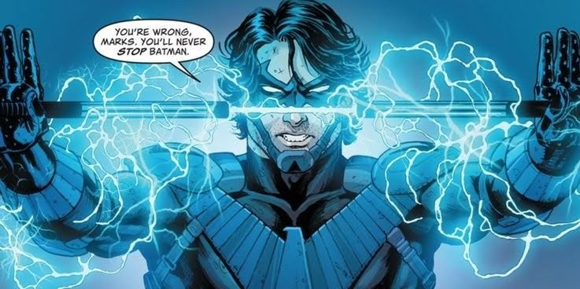
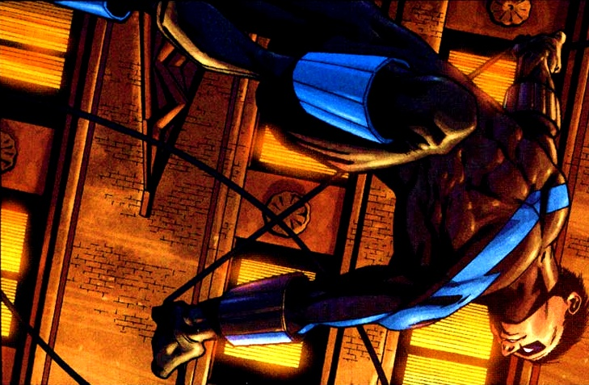
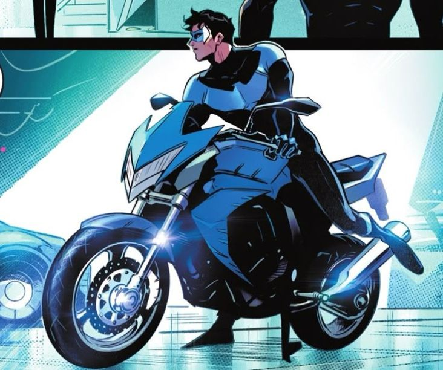
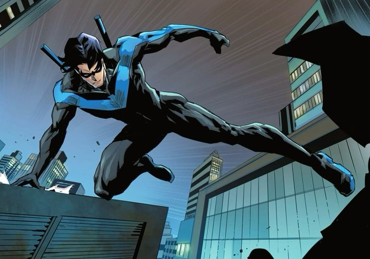
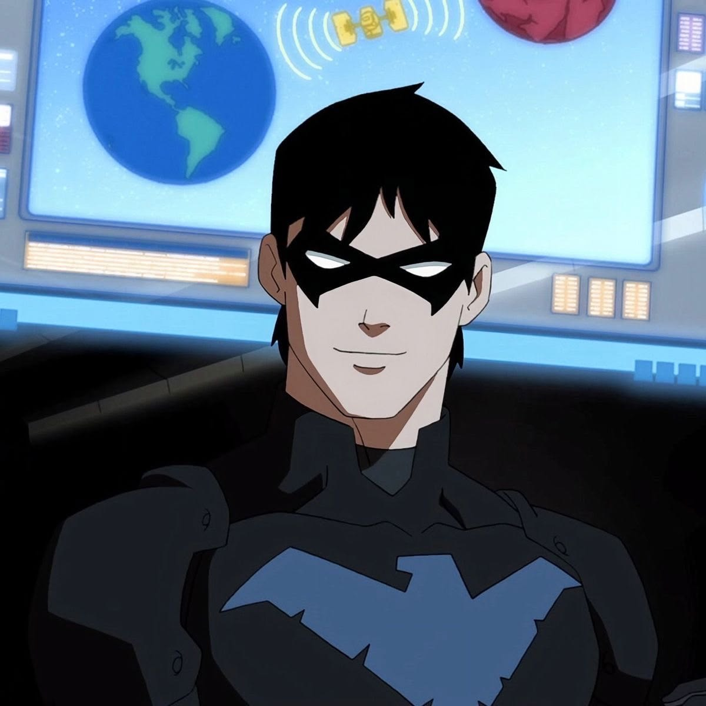

O menino do circo
Dick nasce no Haly’s Circus, onde os pais faziam parte dos Flying Graysons, uma família de trapezistas. Desde pequeno aprende acrobacia, equilíbrio e a confiar nas pessoas ao redor.
Richard “Dick” Grayson
De acrobata de circo a líder de heróis: o primeiro Robin que aprendeu a voar sozinho.

Dick nasce no Haly’s Circus, onde os pais faziam parte dos Flying Graysons, uma família de trapezistas. Desde pequeno aprende acrobacia, equilíbrio e a confiar nas pessoas ao redor.
O mafioso Tony Zucco sabota o trapézio e os pais de Dick morrem diante do público. Bruce Wayne estava na plateia, reconhece a dor do menino e o acolhe em Wayne Manor.
Em 1940, Dick veste o uniforme de Robin. Ele traz humor e leveza para um Batman sombrio e muda a forma como o herói trabalha.
Longe da sombra do Batman, Dick lidera os Jovens Titãs, cria amizades duradouras e descobre que sabe inspirar equipes inteiras.
Em 1984, Dick deixa o manto de Robin e assume a própria identidade. O nome vem de uma lenda kryptoniana que ele conheceu numa aventura ao lado do Superman.
Ele se muda para Blüdhaven, cidade vizinha de Gotham e muito corrupta. Depois enfrenta perdas, assume o manto do Batman por um tempo, vira espião em Grayson e volta ainda mais confiante.
Nightwing luta para provar que dá para combater o crime sem perder a esperança. Onde o Batman usa o medo, Dick usa a confiança, o carisma e o trabalho em equipe. Ele quer proteger quem não tem voz, inspirar outros heróis e manter a família unida quando tudo parece escuro.

Um dos melhores acrobatas do universo DC. Piruetas, saltos e quedas controladas desconcertam qualquer adversário.

Mestre em Kali/Escrima e treinado pelo Batman. Mistura velocidade, fluidez e golpes em movimento.

Aprendeu investigação com o Batman e monta planos rápidos mesmo sob pressão.

Lidera Titãs, Outsiders e a própria Bat-Família. As pessoas confiam nele por instinto.

Dois bastões que se unem em um e podem liberar descargas elétricas.

Permite cruzar prédios, escalar paredes e balançar entre telhados.

Veloz e silenciosa, ideal para as ruas apertadas de Blüdhaven.

Traje reforçado, máscara com lentes adaptáveis e detalhes em azul.
Dick é o primeiro filho adotivo de Bruce e o irmão mais velho de Jason Todd, Tim Drake e Damian Wayne. Cuida de todos e muitas vezes resolve as brigas da casa.
Fundador e líder de várias formações. Foi lá que conheceu Estelar, Ravena, Mutano, Ciborgue e tantos outros.
Já trabalhou com a Liga, é considerado um dos grandes líderes do universo DC e chegou a assumir o manto do Batman.
Veja aliados e inimigos na aba .
Escolha uma missão, derrote o vilão e cuide da sua vida e da sua energia. Cada vitória libera uma missão mais difícil.

Selecione uma missão na lista para começar.
Uma trilha de leitura para entender a história do Dick, da estreia como Robin até o Nightwing de hoje. Marque as que você já leu!
Nenhuma HQ encontrada com essa busca.
As datas e os créditos são para estudo. Confira em fontes oficiais antes de usar em trabalhos.
Um guia da série animada em que Dick Grayson aparece primeiro como Robin e depois como Nightwing. Marque os episódios que você já assistiu e acompanhe o seu progresso.
Títulos originais em inglês, conferidos no epguides e no TheTVDB. Os resumos foram escritos para este site, sem spoilers. Justiça Jovem é uma obra da DC / Warner Bros. Discovery.
As perguntas e a correção vêm do servidor em C#. Quanto você sabe sobre o Dick?